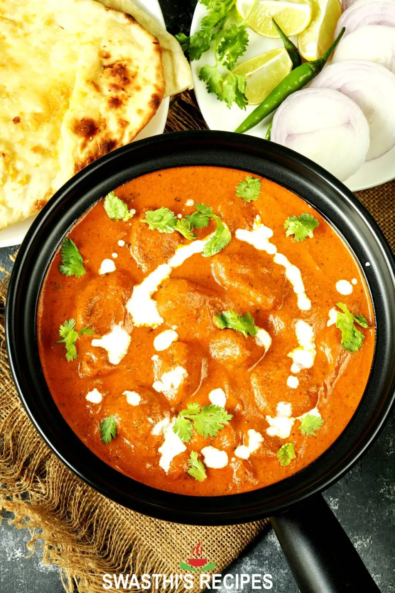

Butter Chicken

Description
Biryani is a mixed rice dish most popular in South Asia and was thought to have originated from ancient Iran.
It is made with rice, some type of meat (chicken, beef, goat, lamb, prawn, or fish) and spices.
To cater to vegetarians, in some cases, it is prepared by substituting vegetables for the meat.
Ingredients
- turmeric
- red chili powder
- garam masala
- ginger garlic paste
- solt
- lemon juice
- kasuri methi
- hung curd
- oil
- leg chicken
Steps
- In a bowl, combine chicken with all of the ingredients for the chicken marinade; let marinate for 30 minutes to an hour
- Heat oil in a large skillet or pot over medium-high heat. When sizzling, add chicken pieces in batches of two or three, making sure not to crowd the pan. Fry until browned for only 3 minutes on each side. Set aside and keep warm. /li>
- Heat butter or ghee in the same pan. Fry the onions until they start to sweat (about 6 minutes) while scraping up any browned bits stuck on the bottom of the pan.
- Add garlic and ginger and sauté for 1 minute until fragrant, then add ground coriander, cumin and garam masala. Let cook for about 20 seconds until fragrant, while stirring occasionally.